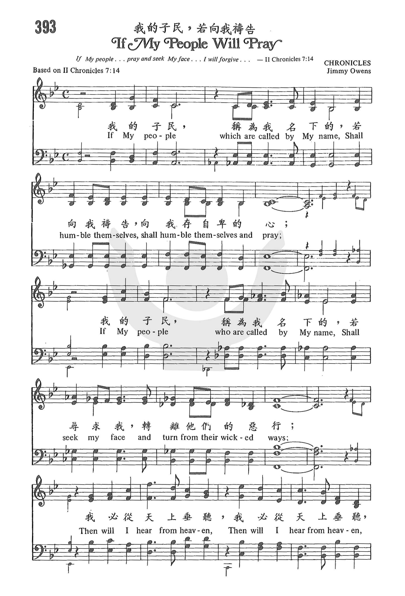
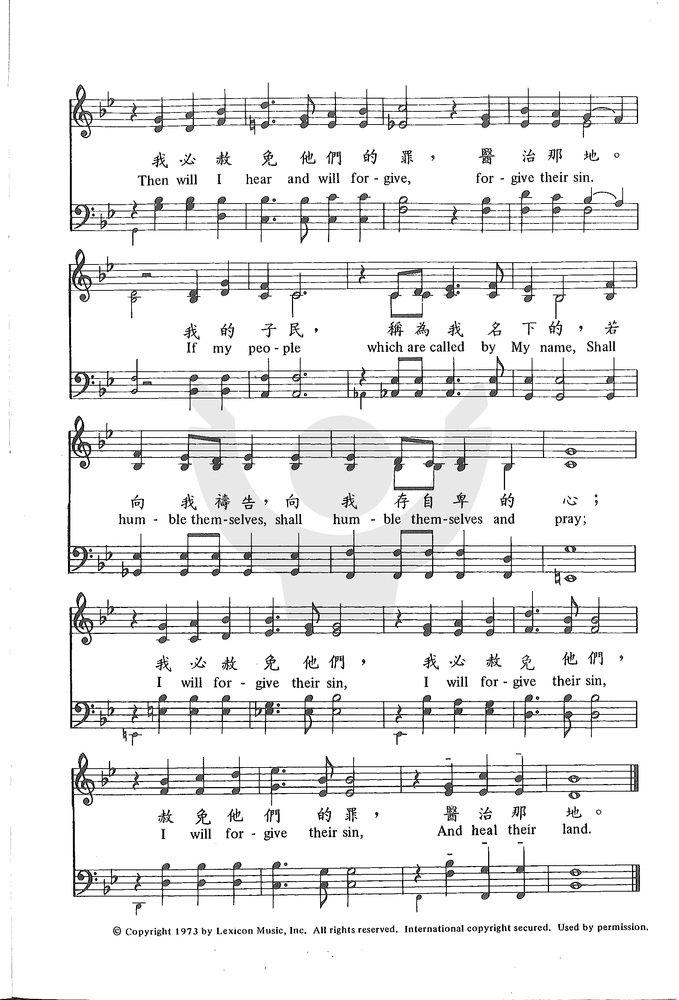

1080 If My People Will Pray _Jimmy Owens 我的子民，若向我祷告
|
|
|
|
393 If My People Will Pray |
393 我的子民，若向我禱告
我的子民，稱為我名下的，
我的子民，稱為我名下的， |
|
https://www.zanmeishige.com/tab/25761.html?songbook=1&index=393


|
|
|
|
|

| Text: | If My People Will Pray |
| Adapter: | Jimmy Owens |
| Tune: | OWENS |
| Composer: | Jimmy Owens |
| Short Name: | Jimmy Owens |
| Full Name: | Owens, Jimmy |
| Birth Year: | 1930 |
Owens, James Lloyd (Jimmy). (Clarksdale, Mississippi, December 9, 1930-- ). Foursquare. Attended Millsaps College, Jackson, Miss.; Southwestern College, Memphis, Tennessee; Cathedral School of the Bible, Oakland, California; Cabot College, San Leandro, Calif. Minister of Music, The Neighborhood Church, Oakland, Calif., 1951-1966; Minister of Music, United Community Church, Glendale, Calif., 1966-1968; Minister of Music, Anaheim Christian Center (now Melodyland Christian Center), Anaheim, Calif., 1968-1969.
With his wife Carol, Owens has composed four Christian musicals. He has recorded several albums.
我的子民，稱為我名下的，
若向我禱告，向我存自卑的心；
我的子民，稱為我名下的，
若尋求我，轉離他們的惡行；
我必從天上垂聽，我必從天上垂聽，
我必赦免他們的罪，醫治那地。
我的子民，稱為我名下的，
若向我禱告，向我存自卑的心；
我必赦免他們，我必赦免他們，
赦免他們的罪，醫治那地。
 (請點耳機收聽)
(請點耳機收聽)
這首詩歌的歌詞取自歷代志下7:14「……我……的子民，若是自卑，禱告，尋求我的面，轉離他們的惡行．我必從天上垂聽，赦免他們的罪，醫治他們的地。」由現代福音詩歌作曲家歐文史（Jimmy
Owens, 1930 - ）譜曲。 歐文史出生在美國密西西比州。 他家一門三傑，妻子歐凱樂（Carol Owens, 1931 - ）和女兒柯潔美（Jamie
Owens-Collins , 1955 - ）都是福音詩歌作家。
2001年9月11日恐怖份子劫持民航機，衝撞紐約世貿中心及五角大廈，舉世震驚，美國全國籠罩在悲憤中，也激起了愛國的情操，和回轉求告神的心。
安逸的生活，使人遠離神，災難的降臨，促人親近神。 這首詩歌告訴我們，祇要我們向神禱告，遠離惡行，祂必赦免，醫治這地。
廿多年前，筆者初臨美國時，思國思鄉之心殷切。 多年以來，每聽到「梅花」和「神佑美國」（God
Bless America）時，都情不自禁，潸然淚下。 911慘劇發生後，美國國會議員聚在國會大廈前階梯上，齊聲合唱「神佑美國」，嗣後，在911追悼大會及許多場合都唱此歌，它儼然成為美國人民的心聲。
神佑美國
神佑美國，我深愛的土地，伴她身旁，
天上發出光芒，領她度過黑夜。
從高山到平原，經波濤越大海，
神佑美國，我的家園，我甜密的家園。
（可在『YouTube 』上聆聽此歌）
「神佑美國」的作者是廿世紀著名的流行歌曲作家歐柏林（Irving Berlin,
1888-1989）。 他是來自俄羅斯的猶太人，五歲時，隨家人自西伯利亞移民來美國紐約。
年輕時，他在酒廊打工，歌唱，無師自通地開始創作歌曲。 他為百老匯音樂劇及好萊塢歌舞片寫作了無數歌曲。 其中有 899首，他擁有版權，450餘首都是廣傳的流行歌曲。 如眾所週知的「銀色的聖誕」（White Christmas）即他名作之一。
歐柏林沒有受過任何音樂訓練，因此他不會看譜和寫譜，他祇會在鋼琴上以F大調彈奏，曲譜由他秘書記錄下來。 「神佑美國」作於1918 年，原為百老匯一齣喜劇而作，但因格調與詼諧劇情不符而未被採用。
1938年，在戰火聲中，他為宣揚和平，改寫了這首舊譜。 同年11月11日「停戰紀念日」，名女歌星史美芙（Kate
Smith）在電台播唱此歌，即刻轟動全國，人人爭購曲譜，被稱為非正式的美國國歌。
事後歐柏林成立了「神佑美國基金會」，將該曲全部版稅的收入，捐贈給美國男女童軍團。
中英文聖詩集參考
英文歌名 If
My People Will Pray
教會聖詩 393
歡欣讚美 803